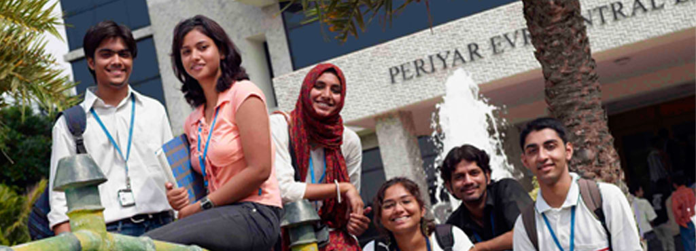
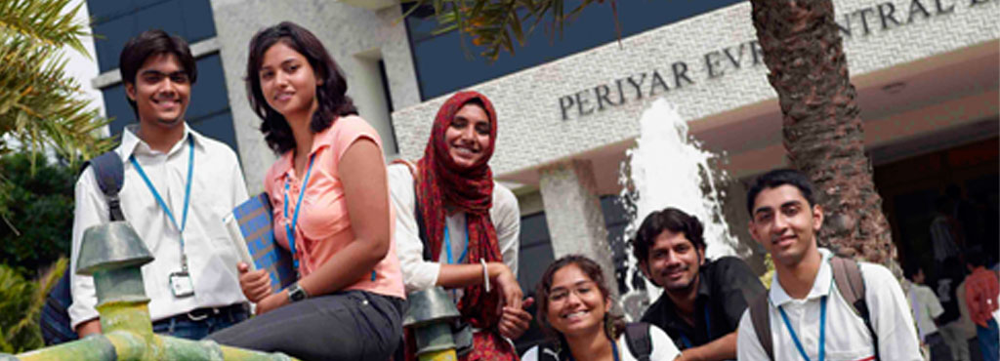

Vellore Institute of Technology
Rated for Excellence!!!

About VIT
VIT was established with the aim of providing quality higher education on par with international standards. It persistently seeks and adopts innovative methods to improve the quality of higher education on a consistent basis.The campus has a cosmopolitan atmosphere with students from all corners of the globe. Experienced and learned teachers are strongly encouraged to nurture the students. The global standards set at VIT in the field of teaching and research spur us on in our relentless pursuit of excellence. In fact, it has become a way of life for us. The highly motivated youngsters on the campus are a constant source of pride. Our Memoranda of Understanding with various international universities are our major strength. They provide for an exchange of students and faculty and encourage joint research projects for the mutual benefit of these universities. Many of our students, who pursue their research projects in foreign universities, bring high quality to their work and esteem to India and have done us proud. With steady steps, we continue our march forward. We look forward to meeting you here at VIT.
History of VIT
It was established under Section 3 of the University Grants Commission (UGC) Act, 1956, and was founded in 1984 as a self-financing institution called the Vellore Engineering College. The Union Ministry of Human Resources Development conferred University status on Vellore Engineering College in 2001. The University is headed by its founder and Chancellor, Dr. G. Viswanathan, a former Parliamentarian and Minister in the Tamil Nadu Government. In recognition of his service to India in offering world class education, he was conferred an honorary doctorate by the West Virginia University, USA. Sankar Viswanathan, Sekar Viswanathan and G.V. Selvam are the Vice-Presidents; Dr. Anand A. Samuel is the Vice-Chancellor and Dr. V. Raju and Dr. S. Narayanan are the Pro-Vice-Chancellors.
Our Vision
We at VIT will impart futuristic technical education and instil high patterns of discipline through our dedicated staff, who shall set global standards, making our students technologically superior and ethically strong, who in turn shall improve the quality of life of the human race.
Quick Facts
- Over 2,23,000 appeared for the VIT Engineering Entrance Examination (VITEEE) in 2017
- The institution offers 36 Undergraduate, 31 Post graduate, 4 Integrated and 3 Research Programmes.
- NAAC has re-accredited VIT with an 'A' grade.
- A 360-acre eco-friendly campus with over 50.83 lakh sq.ft. built-up space at Vellore.
- VIT has been accredited by TCS, Wipro and Cognizant for academic collaboration and placements.
Campus life at VIT
Every effort has been made by the administration and other management boards to ensure that all students find VIT a very active, fun and resourceful place to spend their academic years. Aware of the impact these vital years can have on the minds of the future of our nation and the world, VIT strives to encourage, introduce and develop any and all activities to shape their minds.
Research in VIT
A reputation for excellence in research supported by a high calibre staff is reflected in the demand for entry to Vellore Institute of Technology's programmes from high achieving students. Committed to excellence in fundamental research as well as the development of innovative technologies for the future, VIT offers a quality research training experience for its students. The Institute maintains its relevance to world-class research by linking with industry and business through local and international research networks.
Events
VIT Chennai is a globally engaged, competitive, comprehensive, research-enriched university campus strategically positioned to respond to major industrial, social, economic and environmental demands and challenges.
 

ACADEMICS
Teaching at VIT University is structured around Thirteen schools of study. A student should register in one of the schools, depending on the degree/programme he/she is interested in pursuing.
ADMISSIONS
The university offers 36 Undergraduate, 31 Postgraduate, 4 Integrated Programmes and 3 Research programmes. In addition to full-time/part-time Ph.D., M.Tech (BY RESEARCH) Degrees.
PLACEMENTS
The PAT centre plays an integral role in creating the illustrious placement record of VIT. It ensures smooth functioning of the placement activities in the campus.